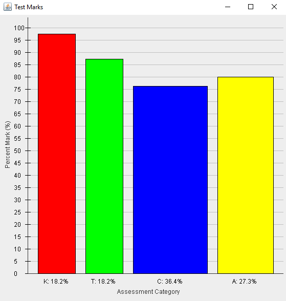
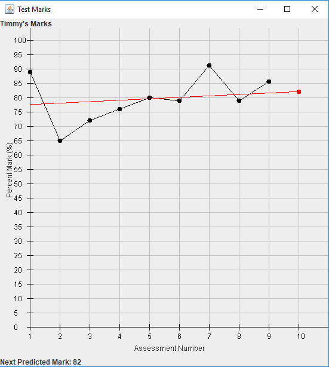
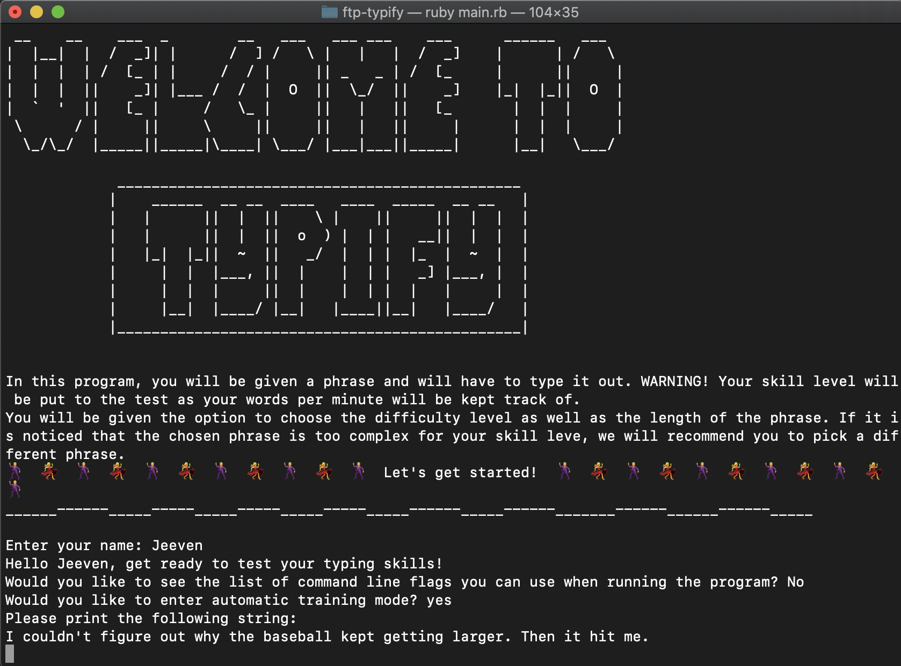

| Line Following Robots | For the final project of my Grade 12 Computer Engineering class, I built, wired, and programmed an autonomous robot that can follow a black line of tape. One of our challenges involved getting the robot to count the pieces of tape at the start of a track and navigate to the appropriate box, then to the ending position. | ||
| Graphical Mark Output | For the final project in my Grade 12 Computer Science class, I worked in a group to create a piece of (java) software for a teacher. My group's project was a mark tracking program that could keep track of and display student marks graphically. I worked on the logic and display of a line and bar graph that tracked a student's historical performance, and a student's performance per category on a particular assessment. The width of each bar changes based on how heavily that category is weighed. You can find code for the line graph here and code for the bar graph here. |   | |
| Typify | For our Fall Team Project on the Dev Degree training path, my team chose to make a command line typing practice game. I worked primarily on inputting/outputting to/from a file so that historical words per minute and accuracy data could be recorded, and on calculating and displaying stats including mean, median, a linear trendline, and the coefficient of correlation of the data. The ruby code for calculating these stats can be found here. |  |